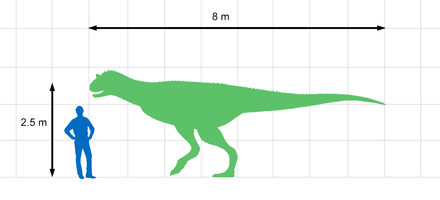

El Carnotaurus vivió en América del Sur hace alrededor de 100 millones de años, en el Cretácico superior. Era un dinosaurio grande
que guardadaba cierto parecido con el toro. Tenía 2 pequeños cuernos sobre sus ojos, cabeza pequeña, miembros anteriores extremadamente
pequeños y una cola fina y larga. Sus ojos estaban orientados hacia adelante, lo que puede indicar que tenía visión binocular y percepción
de profundidad. Sus miembros anteriores eran muy pequeños, más pequeños aún que la de los Tiranosáuridos. Eran tan cortos que daba la sensación
de que nacían directamente de los codos. Es posible que el Carnotaurus haya sido capaz de hacer ataques intempestivos con la cabeza.

El Carnotaurus apareció en la saga de Jurassic Park y Jurassic World, inicialmente apareció en los videojuegos de Jurassic Park
pero no fue hasta en la en la película de Jurassic world 2, otra aparición fue en la pelicula de Disney Dinosaurios como
antagonista principal.

Por Julian Alexander Aguilar
Instituto Ferrini Panamá
Décimo grado
prof.Orlando Vera